1926—The New-Way Course in Fashionable Clothes-Making
Introduction to Lesson 25—The Well-Dressed Child
The Well-Dressed Child
To the child reveling in the fascinating world of tops and marbles and dolls, clothes are not so very important—as long as they have plenty of pockets and are comfortable enough to permit of skipping rope and climbing trees. But to the "younger generation" — that vast army of eight-to-sixteen—clothes are mighty important, indeed. And especially are they important to the young folks who are standing timidly on the threshold of youth, wondering vaguely about such things as picnics and birthday parties.
There is the young boy, for instance, gallantly carrying home for the first time the books of the "girl across the aisle." He wants to feel that his Norfolk suit is absolutely correct, and he wants to tell himself with a secret thrill of pride that she is admiring the colors of the stripes in his blouse. As for the young miss herself, she is perfectly miserable if her hair-bow is not the prevailing shade of red and her new school frock is not bright and pretty.
It is in early childhood that tastes are developed, that ideals are moulded. One of the most vital problems of the mother is to clothe the child correctly, in good taste, and to allow that child every opportunity to express his or her own taste in the selection of style and color.
Too many children fret uncomfortably in suits that are too tight, in huge sailor hats that droop down over the eyes. To many children are made self-conscious and awkward because they are dressed in an outlandish and uncomfortable fashion. Too many children are denied the chance of developing the good taste that is inherently theirs.
What constitutes "good taste" in children's clothes, you ask? Surely it would be impossible to set down certain definite rules, for children in the city have vastly different requirements that children in the country. But there are certain fundamental principles which apply to children's dress everywhere, certain principles which every mother who prides herself upon having good taste, should observe.
Simplicity — the Keynote
The first requirement of good taste in children's clothes is simplicity. There can be nothing quite so humiliating to a child as to be dressed in an elaborate, gaudy fashion that renders him conspicuous. It makes him awkward, self-conscious, ill-at-ease in the company of others. It robs him of the very charm which makes childhood so beautiful—the charm of absolute forgetfulness of self.
The woman of good taste never dresses to attract attention. Her clothes blend with her personality, and instinctively one knows that she is well-dressed without noticing what she is wearing. The same rule applies to children's clothes. The young boy or girl should not be dressed in the kind of clothes that attract attention but the kind that blend with the personality of the child and create a pleasing impression without drawing direct attention to the particular suit or dress.
After all, one would hardly expect elaborate clothes, with even the least suggestion of sophistication, for children. Childhood is simplicity itself—and the more simple the dress or little suit is, the more the charm of the child is enhanced. Put a little six-year-old miss into a gaudy creation of satin and lace and see how quickly she becomes an affected little coquette. But put that same child into a demure little frock of linen or chambray, with nothing more pretentious for trimming than a sash or a bit of smocking, and see how appealing that child will be in her simple charm.
Comfort in Children's Clothes (Illustrations A and B)
The child's figure is constantly changing. Little shoulders suddenly decide to square themselves; little figures round out almost overnight; tots scarcely more than three feet high decide that they will surprise everyone by increasing their height to four feet. Naturally, clothes become too narrow, too high and too short in proportion.
Children's clothes, therefore, should be made with a regard for the ever-changing figure. Little dresses should have deep hems, and plenty of fullness. Suits for the young boy should be roomy and comfortable. Even underthings should be made a trifle too large rather than just-right in size.
Absolute comfort is important in children's clothes. They should be in one piece, if possible, or buttoned where no pressure is caused. They should never be so tight that they restrict circulation, but should also be sufficiently comfortable to allow the child every freedom of movement.
Glance 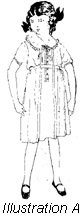for a moment at Illustration A. It shows a little girl in a dress which is uncomfortably styled and therefore incorrect. Illustration B shows a dress ideally adapted to the requirements of childhood.
Girls should have as much comfort of dress as boys have. This is especially true today, you know, when every feminine member of the family—from little sister to grandmother—is preaching the gospel of absolute equality! The day of the little girl who sat in a corner and embroidered while her more fortunate brother went fishing and hiking is over. Today, the young miss runs and skates and plays ball like her wildest brother—and her clothes must be made accordingly. The wise mother provides her young daughter with comfortable one-piece dresses that have bloomers to match—and young daughter is finding that they are splendid for school and play wear.
What Shall the Material Be?
Children's clothes should always be developed in light-weight materials. In winter the materials should be warm, of course, but they should not be heavy-weight fabrics. The youngster is harmfully burdened by wearing heavy clothing, and the same degree of warmth can be secured by using soft, light-weight materials which do not weigh down the wearer.
Following is a list of the materials most frequently used for children's clothes: percale, dimity, kindergarten cloth, voile, poplin, serge, gingham, pique, khaki, lawn, madras, gabardine, corduroy.
For Playtime Wear
Play is, and always will be, the language of childhood. The little girl who does not like to play hop-scotch, and jumping rope, and doll's house is not normal. The boy who does not cherish his marbles and tops more than anything else in the world isn't natural. The healthier and happier a child is, the more he plays; and the wilder his play becomes, the more strength and vitality he stores away for that stern business we call life which is to come later.
Children should have plenty of play clothes in which they can do anything their exuberant spirits demand. They should not be denied the infinite pleasure of climbing trees and fences because some impractical dress or suit is likely to be ruined. They should not be made sullen and miserable by constant warnings to be careful of some foolishly frivolous little dress that should never have been made or bought. With the right kind of play clothes they can romp to their hearts' content—and mother will have no strain whatever in keeping their wardrobes in order.
For the boy, there can be nothing more practical for play than a comfortable corduroy suit. Of course he may have his "best blue serge" for important occasions, such as when folks come a-visiting, but for school and play wear corduroy resists the most relentless ear and tear. For the very small boy who still reverts to "all fours" in his efforts to cover ground, simple little rompers of some staunch, washable material are most appropriate.
The young girl is likely to be happiest in a pretty plaited skirt and middy blouse. She will be happier still if she has a pair of serge or sateen bloomers to wear beneath the skirt. Then she won't have to worry about catching ruffles on barbed-wire fences or crushing carefully laundered little frocks that have to be "kept nice for school tomorrow." Simple gingham dresses are always appropriate for the school-girl, and poplin is an ideal material for the miss who is still young enough to play, but old enough to want to look pretty.
Play clothes should be dark of color and staunch of material. They should be made with plenty of roominess, and should be devoid of all trimming. Overalls are the boon of the busy housewife who has several young play-loving youngsters and washes all their clothes herself—and they are really quite simple to make. The one-piece jumper dresses for little girls serve the same purpose as overalls for boys and prove decidedly practical both for school and play wear. With a generous supply of practical clothes to depend upon, the youngsters need not be denied the joyous (if rough) pleasures of childhood.
The Dressy Occasions (Illustrations C, D and E)
But being a rather proud mother, as most mothers are, you insist upon frilly, pretty things for the "dressed-up" occasions when folks come to call. And you are right. Children should be impressed, from the most tender years, with the importance or correct clothes for certain occasions. They must know that their play clothes are not appropriate at dinner, or in the drawing-room. They must learn to respect the dignity of visiting and of helping mother entertain—and their respect should be reflected in their dress and their manners.
Yet, as pointed out previously, children's clothes are not in good taste if they are elaborate and unduly attractive. The note of simplicity should be carried out in their dress clothes, with better materials and perhaps an added touch of style and trimming, to do justice to the important occasion. And this important occasion may be anything from a friend's birthday party to Sunday morning at church.
A very 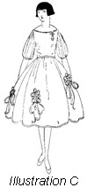charming little dress frock for the young miss who is wavering between childhood and youth may be made of taffeta. If the skirt is made very full and short , and the bodice rather tight, with nothing but prim little nosegays of silk roses and leaves for trimming, the frock will be delightfully reminiscent of the days of the old-fashioned little girl who was "seen but not hear." The dress described is pictured in Illustration C.
For the very young person who, when she isn't in mischief, is very much heard, nothing could be more dressy and appropriate than a crisp white organdie dress, sashed and ruffled in some youthful color such as pink or blue. The little frock pictured in D is what we have in mind for the four or six-year-old. It is quite simple to make, especially if one bears in mind the new quick method of machine ruffling taught in Lesson 7.
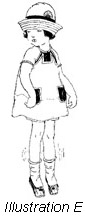When the young miss is "all dressed up" to help entertain visitors or to take a stroll with mother down Main Street, the tiny sister will insist upon something very fine too. If mother is wise, she will have a little linen suit tucked carefully away in the bottom drawer—and this is just the occasion when she will find it appropriate. The suit pictured in Illustration E is of white linen with neck and pockets of pink to match the chubby youngster's pink cheeks. You should have no trouble at all making pretty little suits like this one, when you find the patterns you want.
Children should be taught very early the value of quality. The little girl who is provided with few clothes, but clothes of excellent quality and good taste, will not select gaudy, frivolous styles when she is a young lady. Good taste can become a habit the same as anything else. Rather let the child have few clothes of excellent quality materials, than many clothes of poor material and gaudy trimmings.
The Awkward Age
Awkward indeed, is the "awkward age"—both for the youngster and his or her parents. Who doesn't know some little girl who is "all arms and legs"—a little girl on whom every dress is either too short or too narrow? Who doesn't know some little boy who always seems to be in his own way, who always seems to be "growing out" of his clothes? It is a difficult problem, indeed, to dress children of ten to fourteen becomingly.
Opposite is a page of dresses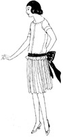 for girls 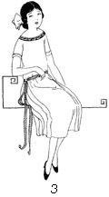of the 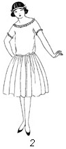awkward 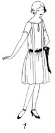age. Notice particularly the dress marked 1—a dress
especially designed to conceal the angular awkwardness of the young person
and soften the lines of her figure. The round
neck is youthful in its simplicity and the full-gathered skirt has a certain
youthful grace. The dress, if it is for special occasions, may be of black
velvet with lace collar and cuffs, for every since Charles I's children
started the style, and Little Lord Fauntleroy followed it, black velvet and
lace have been the boon of happy childhood the world over. But remember, that
velvet is appropriate only for very special occasions when mother herself would
wear her very best and most elaborate gown.
girls 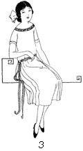of the 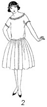awkward 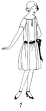age. Notice particularly the dress marked 1—a dress
especially designed to conceal the angular awkwardness of the young person
and soften the lines of her figure. The round
neck is youthful in its simplicity and the full-gathered skirt has a certain
youthful grace. The dress, if it is for special occasions, may be of black
velvet with lace collar and cuffs, for every since Charles I's children
started the style, and Little Lord Fauntleroy followed it, black velvet and
lace have been the boon of happy childhood the world over. But remember, that
velvet is appropriate only for very special occasions when mother herself would
wear her very best and most elaborate gown.
Illustration 4 shows an appealing little frock for the awkward age. It is trimmed solely with smocking which forms the neckline and sleeves, and a wide girdle. When developed of crepe de chine, this dress is suitable for the dressiest of dress-up occasions. Of linen, it makes an excellent school frock.
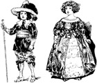The children shown here are of the court of Charles I of England, early in the seventeenth century. Contrast the dress of the young girl and boy with the dress of children today. How could a little girl romp as little girls should, in such an awkward, uncomfortable frock! And how could the little boy thoroughly enjoy the sports of his day in the suit he is wearing! It is interesting to note, however, that even in those early days ruffles, tucks and plaitings were popular as trimmings.
Let the Children Choose
Children have tastes of their own—and they should be given every opportunity to develop these tastes. And one of the surest ways to develop whatever taste they have, is to allow them to choose colors and materials for themselves, to select styles and change them to suite their own requirements.
Take the young girl with you on your shopping trips. Let her handle the materials, see the different colors, glance through the fashion books. Let her make her choice of color and material for her new dress—with your subtle help, of course. By suggesting to her what color and material will be most appropriate, but by allowing her to make the choice herself, you will be moulding her tastes along the lines of artistic development, and she will find it extremely valuable later when she plans her entire wardrobe herself.
A great many mothers make the mistake of thinking that their children are merely vest-pocket editions of themselves—miniature men and women who have to be taken care of until they are able to care for themselves. But children are individuals the same as men and women, they have personalities of their own, and they have their own particular likes and dislikes. It is positively ruinous to the artistic tastes and ideals of a child to force him to wear a vivid red or bright blue when he longs for a dull brown or dark blue. His individuality is stifled, his development is crushed. His own clothes-ideas clash with those that are forced upon him—and the result is the habit of bad taste which may remain throughout life.
If you have a little son or daughter, you have a life to mould, a destiny to direct. Do not prevent the artistic development of the child, as the shadow that hides the sun from the rose, prevents the growth of that rose. Give your child every opportunity to expand, to develop. Regard him as a distinct individual with distinct tastes. Instead of deciding everything for him, forcing upon him what your own tastes dictate, allow him to choose for himself. In self-assertion lies the path of development—and in development lies the character of the future man or woman.